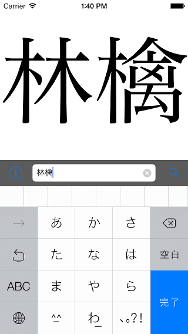
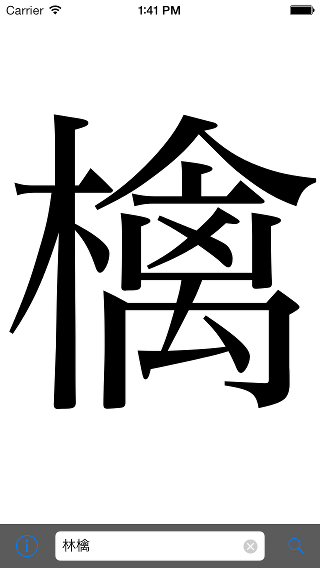
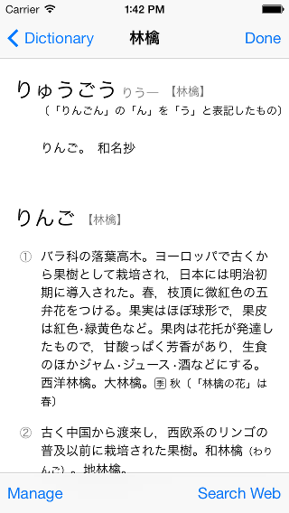

<figure>
  
  
  
</figure>

<ul id="downloadList">
  <li class="badge"><a href="https://itunes.apple.com/app/kanjimagnifier/id568380158?mt=8"><span>Available on the </span>App Store</a></li>
</ul>

<h2>Version History</h2>
<dl>
  <dt>2013-11-05: ver. 1.0.2</dt>
  <dd>Added iAd banner to Preferences view</dd>

  <dt>2013-09-25: ver. 1.0.1</dt>
  <dd>Optimized for iOS 7</dd>

  <dt>2012-10-16: ver. 1.0</dt>
  <dd>Initial version</dd>
</dl>
